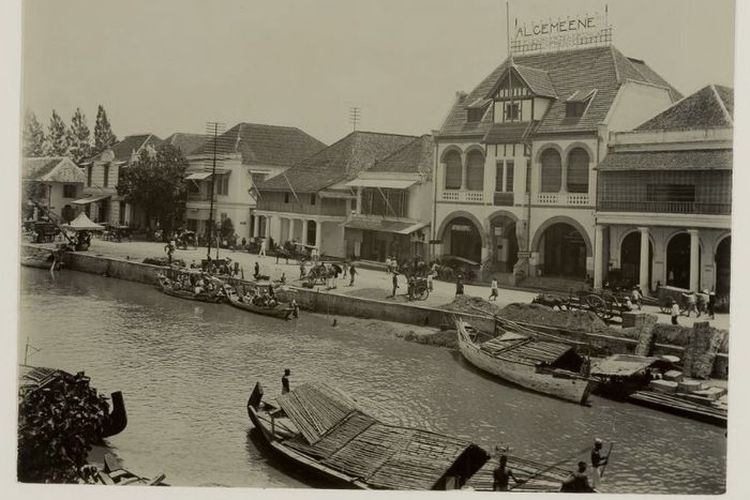
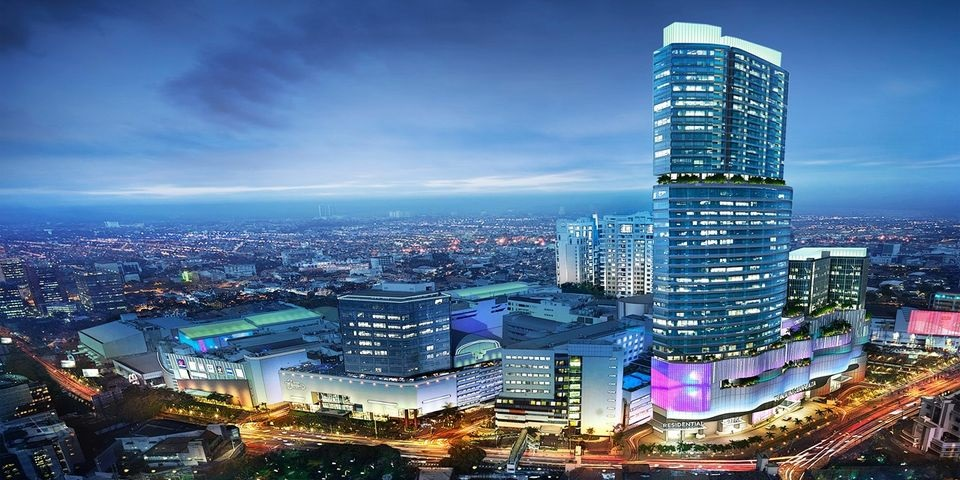

Capital of the East Java, Surabaya is one of the biggest city in Indonesia after Jakarta. This city used to be the trading hub for the illustrious inland empires of Java. Situated on the mouth of the Brantas River, today Surabaya is a modern industrial city, considered the economic and trading center of Eastern Java as well as home to the nation’s navy.
Surabaya has been the chief trading centre of eastern Java since the 14th century. It was controlled by the Dutch from the mid-18th through the mid-20th century, except for a brief period under the British in the early 19th century. During World War II Surabaya was occupied by Japan (1942–45) and heavily bombed by the Allies. In November 1945 a fierce battle was fought in Surabaya between Indonesian nationalists and British troops who were attempting to assert Allied control, which was interpreted by the nationalists to mean a prelude to the return of the Dutch. The city was damaged again during Indonesia’s war for independence (1945–49) from the Netherlands.

Culture
Javanese culture in Surabaya has distinctive characteristics compared to other regions, the uniqueness of its characteristics which is more egalitarian and open. Surabaya is known to have several distinctive arts, namely Ludruk, Remo Dance, and Kidungan. In addition to the art above, the call culture of arek or rek (a distinctive call from Surabaya) is also a unique characteristic. There has also been a mixture of various cultures such as from Madura, the Arab world, India, the Malay world, China and Europe. The Surabaya Cross Culture is an annual art and culture festival that show various cultures outside Indonesia.
Economy
Since the early 1900s, Surabaya has been one of the most important and busiest trading city ports in Asia. Its rich history as a trading port has led to a strong financial infrastructure with modern economic institutions such as banks, insurance, and sound export-import companies. As a metropolitan city, it became the center of economic, financial, and business activities in East Java and beyond. Most of the population is engaged in services, industry, and trade. Major industries include shipbuilding, heavy equipment, food processing and agriculture, electronics, home furnishings, and handicrafts.

Study
Surabaya has several major universities and institutions, including those with religious or technical specialties (sorted by importance). Which are included Universitas Airlangga (UNAIR), a major public research university in Indonesia based in Surabaya and Banyuwangi, Sepuluh Nopember Institute of Technology (ITS) , a national public research university that focuses on scientific, engineering, and vocational education , State University of Surabaya (UNESA), a major university educating teachers; also with programs in Economics, Technology, and Law, Petra Christian University, a major Christian private university in Indonesia, with programs in Economics, Technology, Designs, Technical, Literature and Education.